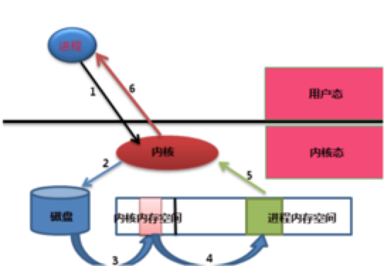
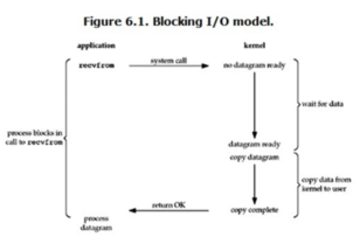
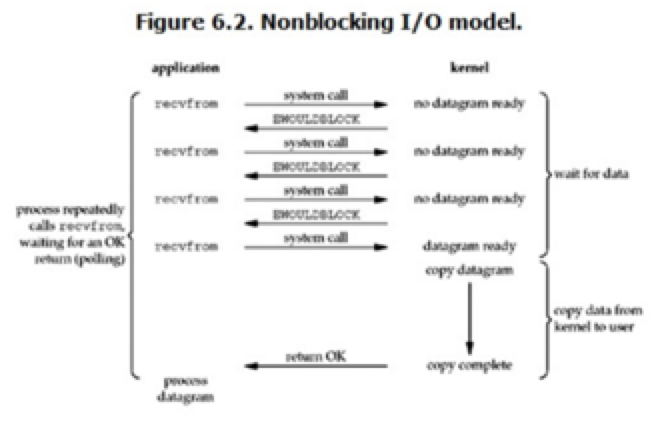
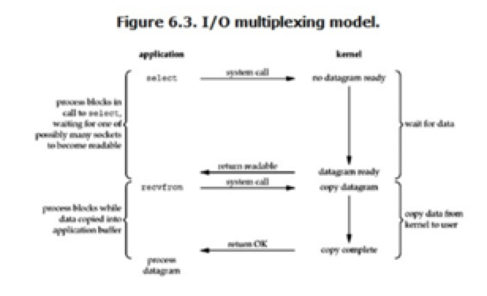
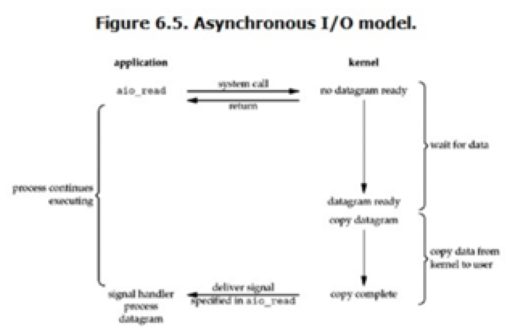

IO模型：BIO/NIO/AIO
一次IO的过程

①进程需要对磁盘中的数据进行操作，向内核发起系统调用，此进程会被切换出去，会被挂起或进入睡眠状态
②内核收到系统调用，知道是对文件的请求，于是告诉磁盘，把文件取出来
③磁盘收到内核命令后，把文件载入到内核的内存空间里面
④内核的内存空间收到数据，把数据copy到用户进程的内存空间（I/O发生的地方）
⑤进程在内存空间得到数据后，给内核发送通知
⑥内核把接受到的通知回复给进程，此过程为唤醒进程，然后进程得到数据，进行下一步操作
阻塞IO（Blocking IO, BIO）

当用户进程调用了recvfrom这个系统调用，kernel就开始了IO的第一个阶段：准备数据（对于网络IO来说，很多时候数据在一开始还没有到达。比如，还没有收到一个完整的UDP包。这个时候kernel就要等待足够的数据到来）。这个过程需要等待，也就是说数据被拷贝到操作系统内核的缓冲区中是需要一个过程的。而在用户进程这边，整个进程会被阻塞（当然，是进程自己选择的阻塞）。当kernel一直等到数据准备好了，它就会将数据从kernel中拷贝到用户内存，然后kernel返回结果，用户进程才解除block的状态，重新运行起来所以，blocking IO的特点就是在IO执行的两个阶段都被block了，大大消耗了程序执行的时间.
非阻塞IO（Nonblocking IO, NIO）

当用户进程发出read操作时，如果kernel中的数据还没有准备好，那么它并不会block用户进程，而是立刻返回一个error。从用户进程角度讲 ，它发起一个read操作后，并不需要等待，而是马上就得到了一个结果。用户进程判断结果是一个error时，它就知道数据还没有准备好，于是它可以再次发送read操作。一旦kernel中的数据准备好了，并且又再次收到了用户进程的system call，那么它马上就将数据拷贝到了用户内存，然后返回。所以，nonblocking IO的特点是用户进程需要不断的主动询问kernel数据好了没有，wait for data阶段进程没有等待，但是copydata从内核拷贝到用户进程时，程序是阻塞状态。
IO多路复用（IO Multiplexing）

IO multiplexing就是我们说的select，poll，epoll。select/epoll的好处就在于单个process就可以同时处理多个网络连接的IO。它的基本原理就是select，poll，epoll这个function会不断的轮询所负责的所有socket，当某个socket有数据到达了，就通知用户进程。
当用户进程调用了select，那么整个进程会被block，而同时，kernel会“监视”所有select负责的socket，当任何一个socket中的数据准备好了，select就会返回。这个时候用户进程再调用read操作，将数据从kernel拷贝到用户进程。所以，I/O 多路复用的特点是通过一种机制一个进程能同时等待多个文件描述符，而这些文件描述符（套接字描述符）其中的任意一个进入读就绪状态，select()函数就可以返回。
这个图和blocking IO的图其实并没有太大的不同，事实上，还更差一些。因为这里需要使用两个system call(select 和 recvfrom)，而blocking IO只调用了一个system call(recvfrom)。但是，用select的优势在于它可以同时处理多个connection。所以，如果处理的连接数不是很高的话，使用select/epoll的web server不一定比使用multi-threading + blocking IO的web server性能更好，可能延迟还更大。select/epoll的优势并不是对于单个连接能处理得更快，而是在于能处理更多的连接。）
在IO multiplexing Model中，实际中，对于每一个socket，一般都设置成为non-blocking，但是，如上图所示，整个用户的process其实是一直被block的。只不过process是被select这个函数block，而不是被socket IO给block。 NIO方式适用于连接数目多且连接比较短（轻操作）的架构。
异步IO（Asynchronous IO）

用户进程发起read操作之后，立刻就可以开始去做其它的事。而另一方面，从kernel的角度，当它收到一个asynchronous read之后，首先它会立刻返回，所以不会对用户进程产生任何block。然后，kernel会等待数据准备完成，然后将数据拷贝到用户内存，当这一切都完成之后，kernel会给用户进程发送一个signal，告诉它read操作完成了。目前linux下的asynchronous IO用得很少。
AIO方式适用于连接数目多且连接比较长（重操作）的架构，比如相册服务器，充分调用OS参与并发操作，编程比较复杂，JDK7开始支持。
Path file = Paths.get("/usr/a.txt");
AsynchronousFileChannel channel = AsynchronousFileChannel.open(file);
ByteBuffer buffer = ByteBuffer.allocate(100_000);
Future<Integer> result = channel.read(buffer, 0);
while (!result.isDone()) {
ProfitCalculator.calculateTax();
}
Integer bytesRead = result.get();
System.out.println("Bytes read [" + bytesRead + "]");